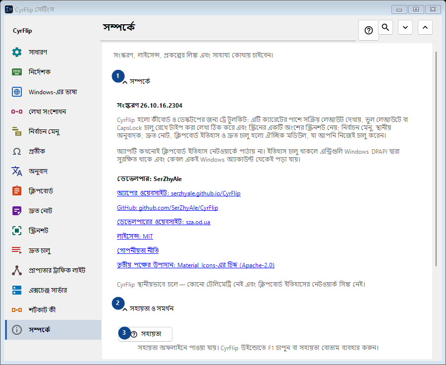
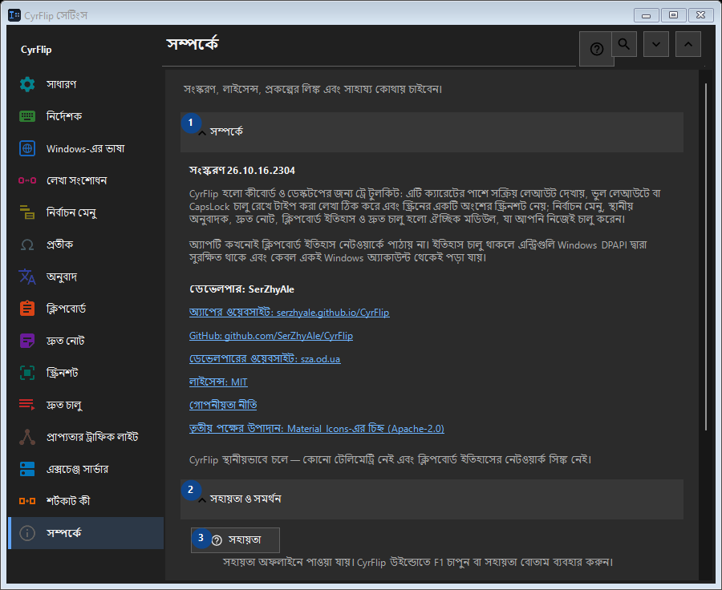

সম্পর্কে
এর কাজ
সংস্করণ, লাইসেন্স, প্রকল্পের লিঙ্ক এবং সাহায্য কোথায় চাইবেন।


ব্যবহারের ক্রম
সেটিং সঙ্গে সঙ্গে প্রয়োগ হয়। নির্দিষ্ট ক্রম নেই; নিচের দলগুলি ব্যবহার করুন।
উপাদান
1. সম্পর্কে
উল্লিখিত কাজের জন্য এই নির্দেশ ব্যবহার করুন। মেনে নেওয়ার আগে নিশ্চিতকরণ পড়ুন।
আপনার শর্টকাট2. সহায়তা ও সমর্থন
উল্লিখিত কাজের জন্য এই নির্দেশ ব্যবহার করুন। মেনে নেওয়ার আগে নিশ্চিতকরণ পড়ুন।
আপনার শর্টকাট3. সহায়তা
সহায়তা অফলাইনে পাওয়া যায়। CyrFlip উইন্ডোতে F1 চাপুন বা সহায়তা বোতাম ব্যবহার করুন।
আপনার শর্টকাট4. স্বাগত পরিচিতি দেখান..
CyrFlip সম্পর্কে জানুন ও সেট আপ করুন।
আপনার শর্টকাট5. ক্যারেটের অবস্থান নির্ণয়...
Windows ও UI Automation ক্যারেটকে কীভাবে দেখে তার একটি স্থানীয় প্রতিবেদন তৈরি করে। কোনো নির্দিষ্ট অ্যাপে চিহ্ন না দেখা গেলে বা ভুল জায়গায় দেখালে কেবল তখনই দরকার।
আপনার শর্টকাট6. লগ লেখকের কাছে পাঠান..
CyrFlip-এর লগ একটি আর্কাইভে জড়ো করে এবং সেটি সংযুক্ত করে লেখকের জন্য একটি বার্তা খোলে। বার্তা আপনি নিজেই পাঠান - CyrFlip নেটওয়ার্কে কিছুই পাঠায় না। ক্লিপবোর্ডের ইতিহাস আর্কাইভে কখনও যায় না।
আপনার শর্টকাট